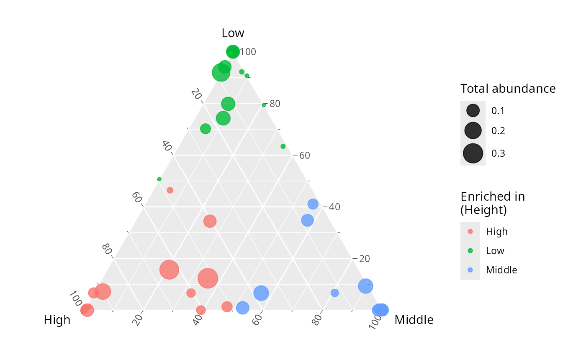

Ternary plot of biomarker taxa across three sample groups
Source:R/ternary_biomarker_pq.R
ternary_biomarker_pq.Rd
Renders biomarker (or any) taxa on a three-group ternary diagram using the
ggtern package. Each point is one taxon, positioned by its relative
abundance in the three groups defined by fact: a taxon near a corner is
enriched in that group. Point size encodes the taxon's total abundance and
point colour the group in which it is most abundant.
This is a pure rendering helper: it does not run any biomarker-detection
analysis. The typical workflow is to detect biomarker taxa elsewhere (e.g. a
LefSe analysis, planned for the netaipq package) and pass the resulting
taxa names to biomarker_taxa. When biomarker_taxa is NULL, every taxon
is shown. The original published figure this reproduces colours ZOTUs by the
treatment (control / manure / frass) in which they are enriched (Du et al.
2023, doi:10.1007/s42832-023-0196-0
).
Usage
ternary_biomarker_pq(
physeq,
fact,
biomarker_taxa = NULL,
level_order = NULL,
raw = FALSE,
point_alpha = 0.8,
show_labels = FALSE,
label_size = 2,
size_range = c(1, 8)
)Arguments
- physeq
(required) A phyloseq::phyloseq object.
- fact
(required) Either a single character string matching a variable name in
sample_data(physeq), or a factor of lengthnsamples(physeq). Must have exactly 3 levels.- biomarker_taxa
(character vector, default
NULL) Taxa names to plot (e.g. biomarkers from a LefSe analysis). WhenNULL, all taxa are used.- level_order
(character vector, default
NULL) Order of the 3 levels mapped to the (left =x, top =y, right =z) ternary axes. WhenNULL, the factor's existing level order is used.- raw
(logical, default
FALSE) IfFALSE(default), each group's abundances are divided by the group total so that group size does not bias the position. IfTRUE, raw summed counts are used.- point_alpha
(numeric, default
0.8) Transparency of the points.- show_labels
(logical, default
FALSE) IfTRUE, taxa names are added next to each point withggplot2::geom_text().- label_size
(numeric, default
2) Font size for the taxa labels.- size_range
(numeric of length 2, default
c(1, 8)) Point size range passed toggplot2::scale_size().
Value
A ggtern/ggplot2::ggplot object.
References
Du et al. (2023) doi:10.1007/s42832-023-0196-0 .
See also
ternary_pq() for a base-ggplot2 ternary/diamond of all taxa
(no ggtern dependency).
Examples
# \donttest{
data(data_fungi_mini, package = "MiscMetabar")
if (requireNamespace("ggtern", quietly = TRUE)) {
# Height has 3 levels (High, Low, Middle); show all taxa
ternary_biomarker_pq(data_fungi_mini, fact = "Height")
}

# }
if (FALSE) { # \dontrun{
# Restrict to biomarker taxa detected elsewhere (e.g. a LefSe analysis)
biomarkers <- c("ASV1", "ASV5", "ASV12")
ternary_biomarker_pq(
data_fungi_mini,
fact = "Height",
biomarker_taxa = biomarkers,
show_labels = TRUE
)
} # }